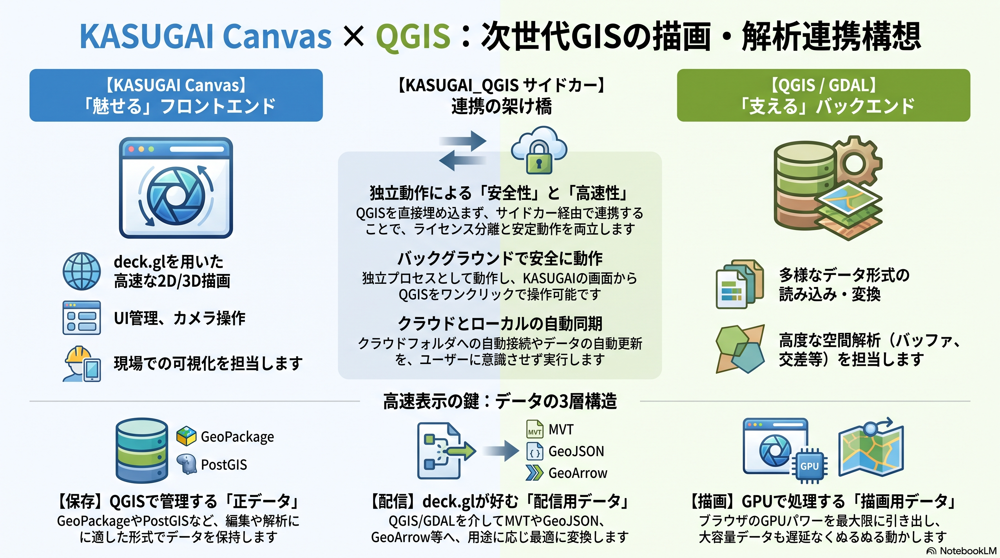

5. QGIS・GDAL連携（構想）
本章では、KASUGAI Canvasをメイン画面・最終2D/3D表示エンジンとし、QGIS・GDALを多様なGISデータを扱うための変換・編集・解析基盤として連携する構想をまとめる。
これは現行実装の説明ではなく、現在のGeoJSON・XYZ・DEM・3D Tiles対応を出発点として、QGIS・GDAL対応を段階的に追加するための設計方針である。

5.1 基本方針
QGISの画面やQgsMapCanvasをKASUGAIへそのまま埋め込むのではない。QGIS・GDALが扱える多様な入力形式を、KASUGAI Canvas（CesiumJS）が描画できる形式へ変換・配信する。
各種GISデータ
├─ GeoPackage / Shapefile / FileGDB
├─ PostGIS
├─ GeoTIFF / COG
├─ LAS / LAZ
└─ 3D都市モデル
↓
QGIS Processing / PyQGIS / GDAL・OGR
↓
KASUGAI向け変換・配信層
↓
GeoJSON / GeoParquet / FlatGeobuf / XYZ / WMTS / 3D Tiles
↓
CesiumJS + Three.js
↓
KASUGAI Canvasで最終表示役割分担
| 役割 | 担当 |
|---|---|
| メインUI、レイヤー管理、カメラ、最終表示 | KASUGAI Canvas |
| ベクター、タイル、Terrain、3D Tilesの描画 | CesiumJS（GeoJsonDataSource / GeoJsonPrimitive / ImageryLayer / TerrainProvider / Cesium3DTileset） |
| GLB、点群、3DGS等の補助3D描画 | Three.js |
| 多様な形式の読み込み・変換 | GDAL・OGR / QGIS |
| 編集・属性・高度な空間解析 | PyQGIS / QGIS Processing |
| 正データの保存 | GeoPackage / PostGIS / FileGDB等 |
5.2 データの3層構造
編集用データと描画用データを同じ形式に統一しない。正データ、配信用データ、描画データを分離する。
正データ
GeoPackage / PostGIS / FileGDB / GeoTIFF
↓ 変換・抽出・タイル化
配信用データ
GeoJSON / GeoParquet / FlatGeobuf / XYZ / WMTS / 3D Tiles
↓ 読み込み・ブラウザ内デコード
描画データ
GeoJSON → GeoJsonDataSource（entity）/ GeoJsonPrimitive| 層 | 目的 | 主な形式 |
|---|---|---|
| 正データ | 編集、属性、解析、保存 | GeoPackage、PostGIS、FileGDB、GeoTIFF |
| 配信用データ | 範囲・ズーム単位の取得 | GeoJSON、GeoParquet、FlatGeobuf、XYZ、WMTS、3D Tiles（MVT は将来候補） |
| 描画データ | GPUへ効率よく渡す | GeoJSON → GeoJsonDataSource（entity）/ GeoJsonPrimitive（バッチ描画） |
この分離により、編集に適した形式を維持しながら、表示には高速な別形式を利用できる。
5.3 ベクター連携：QGIS・GDALからKASUGAI Canvasへ
ベクターは、QGIS・GDALを正データへのアクセスと変換の窓口にする。
GeoPackage / FileGDB / PostGIS
↓
QGIS Processing / GDAL・OGR
↓
┌────────────────────────────────────┐
│ 小規模・編集結果 → GeoJSON │
│ 中規模・置くだけ → GeoParquet │
│ / FlatGeobuf│
│ 大規模・絞り込み → duckdb:/sql:│
│ 広域・範囲配信 → MVT(将来) │
└────────────────────────────────────┘
↓
GeoJSON 正規化 → GeoJsonDataSource / GeoJsonPrimitiveGeoJSON：最初の連携形式
小〜中規模データ、編集直後の確認、属性連携に使用する。現在のKASUGAI
Canvasはgeojson: 行タイプを
GeoJsonDataSource で描画するため、最初のQGIS連携形式に適している。
QGIS / GDAL
↓ GeoJSON
KASUGAI `geojson:` → `GeoJsonDataSource`MVT：大規模ベクターの将来形式
広域・大容量データでは、全件をGeoJSONで取得せず、表示範囲とズームに応じてMVTを取得する。
KASUGAIの表示範囲・ズーム
↓
MVTタイル取得
↓
MVTデコード → GeoJSON 正規化 or 専用タイル描画（将来検討）
↓
必要に応じて地形・3D TilesへドレープMVTの生成・配信には、QGIS
Server、GDAL・OGR、データベース側のタイル生成、専用のタイル生成処理を利用する。現行のCesiumJSベース実装にMVT経路は無く、タイル/大規模経路として将来追加する機能として扱う。なお現行でも
duckdb: の bbox=auto
により「表示範囲だけ読む」運用はParquet系で実現できる。
GeoParquet・FlatGeobuf：大容量ローカルデータ
ローカルPC上で大容量ベクターを高速に扱う場合は、列指向・空間インデックス付きのバイナリ形式で出力し、ブラウザ内デコードしてGeoJSON正規化経路へ渡す。いずれも実装済み。
QGIS / GDAL
↓ GeoParquet / FlatGeobuf 出力
geoparquet: / flatgeobuf:（全件読み込み）
または duckdb: / sql:（SQL絞り込み・bbox=auto）
↓ ブラウザ内デコード（hyparquet / flatgeobuf / DuckDB-WASM）
GeoJSON
↓
GeoJsonDataSource / GeoJsonPrimitiveこれらのバイナリ形式はすべてのデータの標準形式にするのではなく、GeoJSONで十分な小規模データや、SQL絞り込みが適する大規模データとは使い分ける。
5.4 ラスタ連携：公開サービスとQGIS管理データ
公開XYZ・WMTS
公開されているXYZやWMTSは、QGISとKASUGAIが同じ配信元をそれぞれ直接利用する。
公開XYZ / WMTS
├─ QGISで読み込む
└─ KASUGAIで直接読み込むこの場合、QGISがKASUGAIへ再配信する必要はない。
QGIS管理ラスタ
QGIS Desktopは既存のXYZを読み込めるが、QGISプロジェクト内のGeoTIFF等を自動的にXYZとして配信するわけではない。QGIS管理ラスタをKASUGAIへ渡す場合は、次のいずれかを選択する。
QGIS管理ラスタ
├─ QGIS Server → WMS / WMTS
├─ 事前タイル化 → XYZ
├─ COG / 独自タイル配信
└─ ローカルファイルをKASUGAIが直接取得WMTSをKASUGAIで利用する場合は、CesiumJS の
WebMapTileServiceImageryProvider で読み込めるが、TileMatrixSet、座標系、原点、ズーム番号、Y軸方向がXYZ形式と一致するか確認する。一致しない場合は、Rust/Axum等のタイルアダプターでXYZリクエストをWMTSへ変換する。
5.5 DEM・3Dデータ：KASUGAIで直接描画
DEMと3D都市モデルは、可能な限りQGISを経由せず、KASUGAIが直接ストリーミングする。
DEM標高タイル
↓
KASUGAI `TerrainProvider`（地理院標高PNGデコード実装済み）
3D Tiles
↓
KASUGAI `3dtiles:` → `Cesium3DTileset`
QGISベクター
↓ GeoJSON / GeoParquet / FlatGeobuf / duckdb:/sql:
GeoJSON 正規化 → `GeoJsonDataSource` / `GeoJsonPrimitive`
↓
CLAMP_TO_GROUND / ドレープ設定
↓
DEMまたは3D Tilesの表面へドレープQGISとKASUGAIが同じ3Dデータソースを参照できればよく、同じ描画処理を共有する必要はない。
- QGIS：参照、属性、管理、解析
- KASUGAI：Terrain、3D Tiles、点群、3DGSの最終描画
高さ基準はデータごとに管理する。標高とWGS84楕円体高が異なるデータを重ねる場合は、QGIS処理層またはKASUGAI側で補正する。
5.6 QGIS・GDAL機能層
KASUGAIから呼び出す処理は、GDAL・OGRとQGIS Processingを使い分ける。
KASUGAI Canvas
↓ HTTP / IPC
Rust/Axum連携API
├─ GDAL・OGR：入出力、形式変換、CRS、タイル化
└─ PyQGIS / QGIS Processing：編集、属性、高度な空間解析| 処理 | 推奨実装 |
|---|---|
| GeoPackage・GeoTIFFの読み書き | GDAL・OGR |
| Shapefile・FileGDBの変換 | GDAL・OGR / PyQGIS |
| CRS変換 | GDAL・OGR / QGIS |
| GeoJSON・MVTの生成 | GDAL・OGR / QGIS Server / 専用タイル処理 |
| バッファ・交差・クリップ | QGIS Processing |
| 属性検索・編集 | PyQGIS / GDAL・OGR / データベースAPI |
| 3D Tiles・点群生成 | 専用変換処理、必要に応じてQGISと連携 |
想定するAPIは次のとおりである。
POST /api/qgis/layers
POST /api/qgis/features/query
POST /api/qgis/features/edit
POST /api/qgis/processes/run
GET /api/qgis/processes/{id}
GET /api/qgis/state5.7 選択・編集・再描画
選択
KASUGAI picking
↓ layerId / featureId
QGIS・GDAL連携API
↓ 属性・ジオメトリ取得
KASUGAI属性パネル編集
KASUGAI編集UI
↓ GeoJSON / JSON Patch
PyQGIS / GDAL・OGR / データベース
↓
GeoPackage / PostGIS / FileGDB編集後は、変更されたフィーチャーまたはタイルだけを再取得してKASUGAI側で再描画する。正データを直接描画用形式に置き換えるのではなく、編集結果から配信用データを更新する。
5.8 カメラ・CRS・連携状態
カメラの正本はKASUGAI Canvasとする。KASUGAIの表示範囲や選択位置を、必要に応じてQGIS処理層へ通知する。
KASUGAI cameraState
├─ longitude
├─ latitude
├─ zoom
├─ bearing
└─ pitch
↓ 必要に応じて
QGIS処理層へ中心座標・範囲を通知pitch は Cesium の camera.pitch
と同じ符号（水平 0°、真上 +90°、真下 −90°）を採用します。
QGISプロジェクトのCRSからKASUGAIの表示用座標系へ変換する。通常のWeb表示ではWGS84経度緯度を基本とし、編集・解析時は元レイヤーのCRSを維持する。
5.9 現行実装と構想の境界
現行のKASUGAI Canvasで利用できる主な形式と、今後の構想を分けて管理する。
現行
QGIS相当のデータ → GeoJSON → geojson: → GeoJsonDataSource
→ GeoParquet → geoparquet: / duckdb:
→ FlatGeobuf → flatgeobuf: / duckdb:(ST_Read)
→ GPKG等 → duckdb: format=read (ST_Read)
DEM → TerrainProvider（地理院標高PNG対応）
3D Tiles → 3dtiles: → Cesium3DTileset
XYZ → xyz: → ImageryLayer
構想
QGIS / GDAL
├─ 広域・範囲配信 → MVT → MVT経路（将来）
└─ 編集・解析 → PyQGIS / GDAL連携APIMVT経路、QGIS Processing、PyQGIS、GDAL連携APIは、現行実装に追加する拡張機能である。
5.10 実装ロードマップ
| Phase | 内容 | 成果 |
|---|---|---|
| 1 | GeoJSON連携と属性・選択APIを整理 | QGISデータをKASUGAIで表示・検索 |
| 2 | GDAL・OGRでGeoPackage、FileGDB、GeoTIFFを読み書き | 多様なデータ形式の入出力 |
| 3 | KASUGAI向け変換APIを追加 | 変換処理を画面から実行 |
| 4 | MVT生成とベクタータイル経路を追加 | 大規模ベクターのタイル配信 |
| 5 | QGIS Processing / PyQGISを追加 | バッファ、交差、クリップ等の解析 |
| 6 | GeoArrow / Arrowの直接読み込みを追加 | 大容量ベクターの高速処理（GeoParquet/FlatGeobuf は実装済み） |
| 7 | QGIS管理ラスタのWMTS・事前XYZ・COG配信 | QGISラスタの効率的な共有 |
| 8 | Terrain・3D Tiles・点群とのドレープ連携 | 3D現場確認の統合 |
設計上の結論
本構想の基本方針は、次のとおりである。
KASUGAI Canvasをメイン画面および最終2D/3D表示エンジンとし、QGIS・GDALを多様なGISデータをCesiumJSが描画できる形式へ変換・配信する基盤として利用する。
QGISの画面をKASUGAIへそのまま埋め込むのではなく、正データを維持したまま、用途に応じてGeoJSON、GeoParquet、FlatGeobuf、XYZ、WMTS、3D Tiles等へ変換する。小規模データはGeoJSON、中規模はGeoParquet/FlatGeobuf、大規模・絞り込みはduckdb:/sql:、広域タイル配信はMVT（将来候補）を基本とし、KASUGAIのCesiumJSとThree.jsで最終描画する。